要素検索
モデル内の要素を様々な属性値の組み合わせで検索します。
操作方法
検索対象の要素と検索パラメータを入力し検索実行を行うと、検索結果が選択状態になります。その後、検索した要素に対して操作できます。
パラメータ
- チェック対象
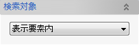
検索する対象要素を選択します。
- モデル全体
モデルに含まれる全ての要素を対象とします。
- 表示要素内
モデル全体で、表示されている要素のみを対象とします。
- 選択要素内
対象となる要素を選択します。
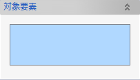
- モデル全体
- 要素名
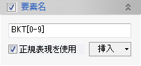
要素名の一部に入力文字列を含む要素を検索します。（大文字、小文字を区別します）
正規表現を使用をチェックすると、正規表現というパターンを使って文字列一致を行います。- .（任意の一文字）
任意の位置文字を表します。
例えば、So.idと入力すると、SolidやSomid、So9idなどの文字列が一致します。 - *（0以上）
直前の文字列を0回以上繰り返します。
例えば、SS.*Pと入力すると、SSPやSS1P、SS15P、SS250Pなどの文字列が一致します。 - +（1以上）
直前の文字列を1回以上繰り返します。
例えば、SS.+Pと入力すると、SS1P、SS15P、SS250Pなどの文字列が一致します。 - ^（先頭）
文字列の先頭を表します。
例えば、^APSと入力すると、APSから始まる文字列は一致しますが、TAPSやXIAPSなどの文字列は一致しません。 - $（末尾）
文字列の末尾を表します。
例えば、APS$と入力すると、APSで終わる文字列は一致しますが、APSTやAPS10などの文字列は一致しません。 - []（セット内の1文字）
括弧内で指定された1文字を表します。
例えば、TK[A-C]と入力すると、TKAかTKB、TKCのいずれかの文字列が一致します。 - [^]（セット外の1文字）
括弧内で指定された1文字以外を表します。
例えば、TK[^A,C]と入力すると、TKAとTKC以外の文字列が一致します。
正規表現は複数の表現を組み合わせて使用することができます。
例えば、^SS[0-9]+Pと入力すると、SSから始まるSS0PやSS1250Pなどの文字列が一致します。 - .（任意の一文字）
- 板厚
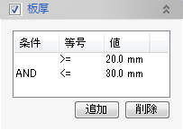
板厚の値で条件一致します。複数の条件を組み合わせることができます。ex) 5>板厚値、20≤板厚値
追加ボタンをクリックすると条件が追加され、削除ボタンをクリックすると選択している条件が削除されます。- 条件
2つ目以降の条件で、かつ（AND）、または（OR）のいずれかを選択します。
- 等号
等号の種類（＝、≠、＜、≦、＞、≧）のいずれかを選択します。
- 値
条件値を入力します。
- 条件
- 質量
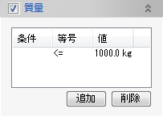
質量の値で条件一致します。複数の条件を組み合わせることができます。
- 材料名
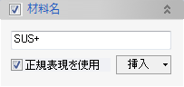
材料名の一部に入力文字列を含む要素を検索します。（大文字、小文字を区別します）
正規表現を使用をチェックすると、正規表現というパターンを使って文字列一致を行います。
正規表現の使い方は、要素名と同様です。 - 型鋼の断面タイプ
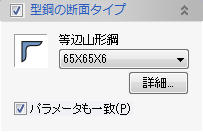
型鋼の断面タイプのみを指定するか、パラメータ値を一致するかを選択することができます。
- 条材の長さ
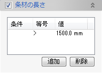
条材またはフェイスプレートの長さで条件一致します。複数の条件を組み合わせることができます。
型鋼はEVO.SHIPが認識しているソリッドのみ対象とします。 - 部材パラメータ
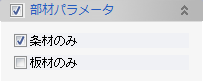
条材のみや板材のみを検索したい場合にチェックします。
型鋼や板はEVO.SHIPが認識しているソリッドのみ対象とします。 - 検索
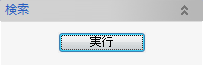
与えられたパラメータ条件で要素検索を実行します。
パラメーター（配管設計）
- 配管接合指示
- 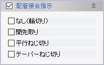
端部に各種接合方法が指定されたパイプ要素を検索します。
- 現場合わせ属性
- 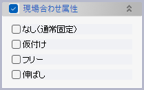
パイプ端部やそこに取り付ける金物に現場合わせが指定されたパイプ要素を検索します。
- 配管一品属性
- 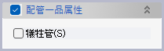
配管一品分け時にパラメータを指定したパイプ要素を検索します。
検索結果
- 検索結果
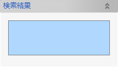
要素検索を実行すると、条件一致した要素がリストに追加されます。
- 操作
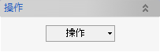
検索結果に対して以下の操作を実行できます。
- 要素グループに追加
検索結果を要素グループへ追加します。

- 色設定
検索結果の要素色を変更します。
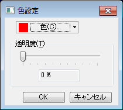
- 要素グループに追加